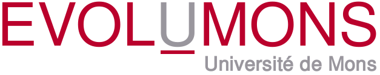
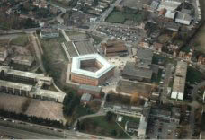
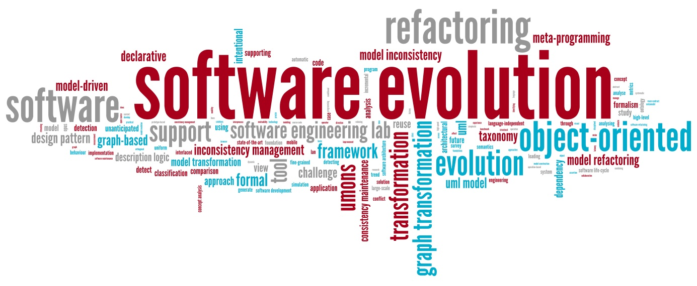
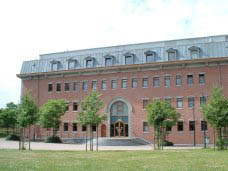

 2011 |
 |
 |
 |
{kind=link}
{kind=link}
Research Seminar on Software Evolution
EvolUMons 2011 is a one-day seminar on research advances in software evolution. Renowned experts in the field will present their latest scientific results in this rapidly evolving domain. As such, this seminar, intends to shed light on some of the ongoing research issues in this important and fascinating research area. A number of open problems in the research domain of software evolution will be discussed, and solutions to some of these problems will be proposed. The seminar will address important research topics in software evolution related to tools, techniques, principles, best practices, formal foundations, case studies and managerial aspects of software evolution.
This seminar is organised under the auspices of the GRASCOMP Graduate School in Computing Science, the Belgian interuniversity attraction poles programme MoVES, the FNRS FRFC Research Center on Software Flexibility. Financial support is provided by the Académie Universitaire Wallonie-Bruxelles. Participation to the event is free of charge, but registration is required.
The schedule for the 2011 edition of EvolUMONS is as follows:
- 9:00 - 10:30 Xavier Blanc. University of Bordeaux 1, France.
Scalable Model Revision Control
[Download Presentation] - 10:30 - 11:00 Coffee Break
- 11:00 - 12:30 Krzysztof Czarnecki. University of Waterloo, Canada.
Model Mappings and Synchronization: From Theory to Practice
- 12:30 - 14:00 Lunch
- 14:00 - 15:30 Christopher Exton. University of Limerick, Ireland.
Software Systems and Programmer Disorientation
[Download Presentation] - 15:30 - 16:00 Coffee Break
- 16:00 - 17:30 Israel Herraiz. Universidad Alfonso X el Sabio, Spain.
The dynamics of software evolution
Presentation slides available on SlideShare - 17:30 - 18:30 Closing reception
You may also consider to participate to VaMoS 2011, the 5th international workshop on variability modeling of software-intensive systems, that will take place in Namur, Belgium. Since this workshop starts the day after EvolUMONS 2011, and since Namur is easily reachable by direct train from Mons, why not combine both events together?